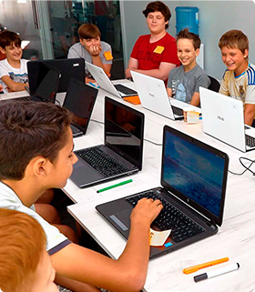

<section>
  <div class="container section1">
    <svg class="apostrophe__logo">
      <use href="../images/apostrophe.svg#apostrophe"></use>
    </svg>
    <div>
      <p class="section1__text">
        За останні 5 років кількість дітей, які вміють користуватись
        комп'ютером, збільшилась в 10 разів
      </p>
      <p class="section1__text">
        Як зазначає більшість дослідників, ці тенденції будуть прискорюватися
        незалежно від шкільної освіти
      </p>
    </div>
    <div class="overlay">
      
    </div>
    <div class="section1__block">
      <p class="section1__block--text">
        Програма навчання створюється за участі відомих спеціалістів ІТ сектору,
        успішних стартаперів, бізнес-тренерів і підліткових психологів.
      </p>
    </div>
  </div>
</section>
